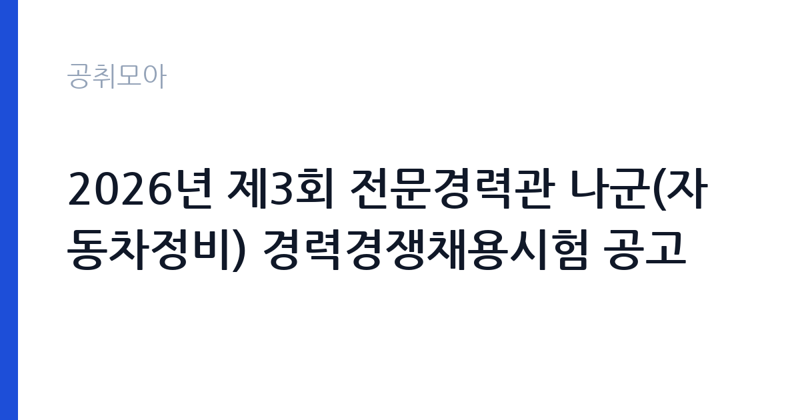

[국가기관] 2026년 제3회 전문경력관 나군(자동차정비) 경력경쟁채용시험 공고
법무부 서울지방교정청 화성직업훈련교도소 · 경기 · 마감 2026-11-05 (D-10) · 출처 나라일터

한눈에 보는 모집 조건
| 기관 | 법무부 서울지방교정청 화성직업훈련교도소 |
|---|---|
| 공고명 | 2026년 제3회 전문경력관 나군(자동차정비) 경력경쟁채용시험 공고 |
| 고용형태 | 정규직 |
| 근무지 | 경기 |
| 게시일 | 2026-10-26 |
| 마감일 | 2026-11-05 (D-10) |
지원자격, 이렇게 읽으세요
- 전문경력관 나군 1명
- 접수 ~2026-11-05 마감
- 세부 조건은 원문 공고문 확인
정규직 채용은 기간의 정함이 없는 근로계약을 전제로 합니다. 수습 기간을 두고 평가한 뒤 정규직으로 확정하는 절차가 일반적이며 기관의 인사 규정과 임금 체계를 적용받습니다. 이번 공고는 법무부 서울지방교정청 화성직업훈련교도소에서 직접 진행하는 자체 전형으로, 응시자격과 제출서류는 공고문에 항목별로 제시됩니다. 자동차 정비 직무는 자동차정비기능사 등 관련 자격과 실무 경력을 함께 요구하는 경우가 많습니다. 전문경력관 나군은 경력경쟁채용으로 진행되어 해당 분야 경력 연수를 증명서로 입증해야 합니다. 대형차량·특수차량 정비 경험이 있으면 유리하고, 전기차 정비 교육 이수 여부를 보는 공고도 늘었습니다. 시설 근무 특성상 신원조회와 보안 서약 절차가 추가됩니다. 서류는 접수 마감 이후 보완이 되지 않으므로 자격 요건과 증빙 서류를 마감 전에 모두 갖춰야 합니다. 공고문에 명시된 우대 사항은 해당 여부를 확인해 증빙을 첨부해야 가점이 반영됩니다. 학력이나 전공 요건이 없는 공고라도 제출서류 목록은 그대로 적용되므로 서류 준비 부담은 줄지 않습니다. 이 공고 원문에 적힌 응시 조건 문구는 '[화성직업훈련교도소] 2026년 제3회 전문경력관 나군(자동차정비) 경력경쟁채용시험 공고 - 임용직급 : 전문경력관 나군 - 채용분야 : 자동차정비 - 자격요건 : 첨부파일 확인 요망 - 응시원서 접수기간 : 2026.'입니다. 문구를 그대로 읽고 본인 해당 여부를 하나씩 표시해 두면 서류 단계에서 탈락하는 일을 줄일 수 있습니다.
이 공고의 포인트
이 공고의 첫 번째 포인트는 고용 형태입니다. 수습 기간 평가를 통과하면 기간의 정함이 없는 신분이 되어 고용이 안정됩니다. 두 번째는 업무 범위가 명확하다는 점입니다. 자동차 정비 직무로 채용되므로 배치 이후 담당 업무가 크게 흔들리지 않습니다. 세 번째는 근무지입니다. 경기 지역 근무로 접근성은 좋지만 그만큼 지원자가 몰리는 지역이므로 경쟁률을 넉넉히 잡아야 합니다. 지역 기반 채용이라 거주지와 통근 가능성이 실질적인 판단 기준이 됩니다. 다만 선발 인원이 1명으로 많지 않아 자격을 갖춘 지원자가 몰리면 경쟁률이 높아질 수 있습니다.
전형은 어떻게 진행되나
1차 서류, 2차 면접의 2단계로 진행되는 구성이 일반적입니다. 서류에서는 자격 요건과 경력 증빙을 확인하고, 면접에서는 실제 업무 수행 능력과 조직 적응을 봅니다. 직무에 따라 필기시험이나 실기, 컴퓨터 활용 시험이 추가되기도 하므로 공고문의 전형표를 먼저 확인하십시오. 단계별로 합격자만 다음 전형에 응시할 수 있고, 단계마다 응시 자격 확인 서류를 다시 제출해야 하는 경우가 있습니다. 최종합격자 발표 후에는 신원조회와 채용 신체검사가 남아 있습니다. 온라인 접수는 마감 시각이 분 단위로 정해지므로 시스템 시간을 기준으로 판단해야 합니다.
원문에서 확인한 전형 방식
[화성직업훈련교도소] 2026년 제3회 전문경력관 나군(자동차정비) 경력경쟁채용시험 공고 - 임용직급 : 전문경력관 나군 - 채용분야 : 자동차정비 - 자격요건 : 첨부파일 확인 요망 - 응시원서 접수기간 : 2026. 11. 3.(화) ~ 11. 5.(목) - 문의 : 031-369-1424, 화성직업훈련교도소 총무과 화성직업훈련교도소장 2026. 10. 26.
이런 분께 추천해요
- 자동차정비 관련 자격과 실무 경력을 갖춘 분
- 고장 진단과 안전 조치를 스스로 판단할 수 있는 분
- 보안 규정이 엄격한 시설에서 근무할 수 있는 분
지원 전 체크리스트
- 응시자격 요건과 경력 기준을 충족하는가 — 경력은 증명서로 입증해야 합니다
- 수습 기간과 정규직 전환 조건을 확인했는가
- 제출서류 목록을 모두 준비했는가 — 누락 시 서류 단계에서 탈락합니다
- 접수 마감 2026-11-05 이전에 접수 방식을 확인해 제출했는가
모집 일정과 제출 타이밍
공고 게시일은 2026-10-26, 접수 마감은 2026-11-05입니다. 준비 기간은 약 10일로 서류 준비와 자격 증빙을 함께 처리하기에는 넉넉하지 않은 편입니다. 첫 이틀 안에 공고문과 첨부 서식을 내려받아 요건을 확인하고 남은 기간에 증빙 서류를 발급받는 일정이 현실적입니다. 면접은 서류 합격자 발표 후 짧은 간격으로 진행되는 경우가 많으므로 서류 제출과 동시에 면접 준비를 시작하는 편이 안전합니다. 마감일에는 접수 시스템이 몰리므로 하루 전까지 제출을 마치는 것이 좋습니다. 제출 서류는 공고문에 적힌 순서대로 정리하면 담당자가 확인하기 쉬워 누락이 줄어듭니다. 경기 지역 근무지는 사업소나 시설이 외곽에 있는 경우가 많아 차량 통근 가능 여부를 확인해야 합니다. 마감까지 2주 안팎이 있어 준비할 시간은 있지만 미루면 촉박해집니다. 선발 인원이 한두 명 수준이라 지원자 개개인의 서류 완성도가 그대로 평가에 반영됩니다.
직무 이해하기: 국가기관
법무·사법 기관은 재판과 송무, 수사, 교정 업무를 담당합니다. 법원행정처와 각급 법원은 재판 지원과 등기, 가족관계 업무를 운영하며, 법무부는 출입국과 보호, 교정 시설을 관리합니다. 보안과 비밀 유지 요건이 다른 기관보다 엄격합니다. 자동차 정비 업무는 기관이 보유한 차량과 장비를 점검하고 고장을 수리하는 일입니다. 엔진·제동·전기 계통의 이상을 진단하고, 정기 점검 주기에 맞춰 소모품을 교체합니다. 수리 이력을 차량 관리대장에 기록하고, 정비 의뢰가 들어오면 우선순위를 정해 처리합니다. 교도소·군부대 같은 시설에서는 수용자나 부대원이 운용하는 차량을 다루므로 보안 규정과 작업 통제 절차가 함께 적용됩니다. 전문경력관은 정비 실무와 함께 장비 관리 계획을 세우는 역할까지 맡습니다. 업무는 혼자 처리하기보다 부서 단위로 나눠 진행되므로 담당 구역과 협업 범위를 입사 초에 확인하는 것이 중요합니다. 업무 강도와 근무 시간대는 부서 배치에 따라 달라지므로 면접에서 확인하는 것이 가장 정확합니다.
자기소개서 작성 팁
지원서는 정비 실적을 차량 대수와 작업 유형으로 정리하는 것이 효과적입니다. 담당했던 차종, 연간 정비 건수, 재작업 없이 처리한 비율을 제시하면 신뢰가 생깁니다. 사고 예방을 위해 절차를 바꾼 경험이 있다면 강한 소재입니다. 보안 시설 근무에 필요한 규정 준수 의식을 별도 문단으로 다루십시오. 문항별 글자 수 제한을 먼저 확인하고, 각 문항의 첫 문장에 결론을 배치하는 방식이 읽기 쉽습니다. 지원 동기는 기관의 어떤 사업에 기여하겠다는 한 문장으로 시작하고, 이어서 본인의 경험을 근거로 붙이십시오. 감점을 피하려면 다른 기관에 보낼 수 있는 범용 문장을 그대로 쓰지 않는 것이 중요합니다. 기관 이름과 사업명이 문장 안에 자연스럽게 들어가야 준비도가 드러납니다.
면접 준비 포인트
면접에서는 고장 진단 과정과 안전 조치를 확인합니다. 같은 증상이라도 원인이 다를 때 어떤 순서로 점검하는지, 정비 중 사고를 예방하기 위해 무엇을 먼저 하는지 답해야 합니다. 부품 수급이 늦어질 때 어떻게 대응했는지도 자주 묻는 질문입니다. 작업 일지와 이력 관리를 어떻게 해왔는지 구체적으로 설명하십시오. 답변은 상황, 판단, 조치의 순서로 정리하면 전달이 분명해집니다. 모르는 질문에는 모른다고 밝히고 확인 방법을 제시하는 편이 억지 답변보다 낫습니다. 마지막에는 근무 의사와 함께 2026-11-05 이후 일정에 언제든 응할 수 있다는 점을 전달하십시오. 마지막 질문 시간에는 근무 조건에 대한 확인 사항을 한 가지 정도 준비해 가면 성실성이 드러납니다.
급여·근무조건 읽는 법
법무부 서울지방교정청 화성직업훈련교도소의 구체적인 보수 수치는 이 공고 원문의 처우 항목과 보수표에서 확인해야 합니다. 공시 자료로 확인되지 않은 금액은 이 글에서 추정해 제시하지 않습니다. 전문경력관은 공무원 신분으로 임용되어 공무원 보수규정의 해당 호봉과 수당을 적용받고, 경력 인정 범위에 따라 초임 호봉이 달라집니다. 자격 수당과 특수 근무 수당이 붙는 경우가 있어 기본급만으로 비교하기 어렵습니다. 2026년 적용 최저임금은 시급 10,320원, 월 환산 2,156,880원(주 40시간·209시간 기준)입니다. 고용노동부 고시 제2025-47호로 확정된 금액입니다. 공고문에 금액이 제시되지 않은 항목은 원문 보수표나 처우 설명에서 확인해야 하며 확인되지 않은 수치는 쓰지 않는 것이 원칙입니다. 비교할 때는 월 급여뿐 아니라 상여·명절휴가비·복지포인트·초과근무수당까지 포함한 연간 총액으로 계산하십시오. 기간제라면 계약 기간 동안의 총액을, 무기계약이라면 호봉 상승과 정년까지의 누적 소득을 기준으로 판단하는 편이 정확합니다.
자주 묻는 질문
- 선발 인원은 몇 명인가요?
공고문 기준 1명입니다. 직종별로 인원이 나뉘는 경우가 있으니 모집분야 항목을 함께 확인하십시오. - 근무지는 어디인가요?
경기 지역의 법무부 서울지방교정청 화성직업훈련교도소 소속 근무지입니다. 세부 주소와 출퇴근 조건은 원문 공고문에서 확인할 수 있습니다. - 보수는 얼마인가요?
채용 신분(정규직)과 기관 임금 규정에 따라 정해지며 구체적인 금액은 공고문 처우 항목에 제시됩니다. 금액이 공개되지 않은 경우에는 원문의 보수표를 확인하십시오.
함께 보면 좋은 공고
[국가기관] 제2026-1회 국립한국교통대학교 지역성장 인재양성체계(앵커) 초광역 성장엔진 인재육성사업 전담인력 신규채용 공고 — 마감 2026-11-03[국가기관] 2026년 제8회 서천우체국 기간제 상시계약집배원(농어촌) 채용 계획서 — 마감 2026-11-03[국가기관] 전북대학교 기획처 연구원(기간제 계약직원) 채용 공고 — 마감 2026-11-04출처: 나라일터 공개정보를 바탕으로 공취모아가 정리한 안내글입니다. 모집 조건·일정은 변경될 수 있으니 지원 전 반드시 원문 공고문을 확인하세요. 본 글은 정보 제공용이며 합격을 보장하지 않습니다.